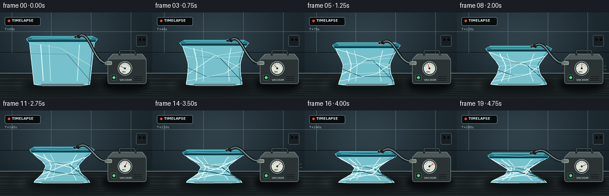
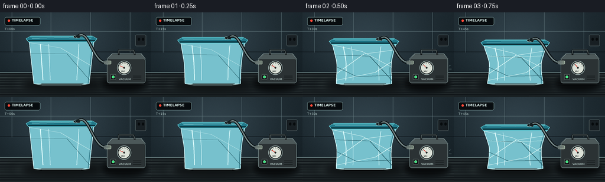

CODING AGENTS AS PIXEL WORLD MODELS
traex/GPT-5.6-Sol · mechanics_0027
点击播放 · 原生 RGB 像素
逐轮保存的候选
回放视频、检查图与代码变化。
每份候选均可单独播放。实际图片检查记录在下方工具轨迹中。
候选 01播放与检查图
点击播放 · 原生 RGB 像素

展开代码变化
--- 上一保存版本
+++ 本次保存版本
@@ -0,0 +1,221 @@
+from pathlib import Path
+import math
+import numpy as np
+from PIL import Image, ImageDraw, ImageFont, ImageFilter
+import artifact_io
+
+W, H, N = 256, 144, 20
+S = 4
+rng = np.random.default_rng(27)
+
+def sc(v): return int(round(v*S))
+def pts(seq): return [(sc(x),sc(y)) for x,y in seq]
+def bezier(p0,p1,p2,p3,n=40):
+ out=[]
+ for i in range(n):
+ t=i/(n-1); q=1-t
+ out.append((q**3*p0[0]+3*q*q*t*p1[0]+3*q*t*t*p2[0]+t**3*p3[0],
+ q**3*p0[1]+3*q*q*t*p1[1]+3*q*t*t*p2[1]+t**3*p3[1]))
+ return out
+
+def line(draw, xy, fill, width=1, joint='curve'):
+ draw.line(pts(xy), fill=fill, width=max(1,sc(width)), joint=joint)
+
+def poly(draw, xy, fill, outline=None, width=1):
+ draw.polygon(pts(xy), fill=fill)
+ if outline: draw.line(pts(list(xy)+[xy[0]]), fill=outline, width=sc(width), joint='curve')
+
+def ellipse(draw, box, fill, outline=None, width=1):
+ draw.ellipse(tuple(sc(x) for x in box), fill=fill, outline=outline, width=sc(width))
+
+def rounded(draw, box, r, fill, outline=None, width=1):
+ draw.rounded_rectangle(tuple(sc(x) for x in box), radius=sc(r), fill=fill, outline=outline, width=sc(width))
+
+def font(size,bold=False):
+ p='/usr/share/fonts/truetype/dejavu/DejaVuSans%s.ttf' % ('-Bold' if bold else '')
+ return ImageFont.truetype(p, sc(size))
+
+# static background at supersampled resolution
+Y,X=np.mgrid[0:H*S,0:W*S]
+# cool workshop wall, subtly brighter around container
+rad=np.exp(-(((X/S-108)/105)**2+((Y/S-48)/78)**2))
+base=np.zeros((H*S,W*S,3),dtype=np.float32)
+base[:,:,0]=25+25*rad-0.055*(Y/S)
+base[:,:,1]=36+31*rad-0.06*(Y/S)
+base[:,:,2]=42+34*rad-0.065*(Y/S)
+noise=rng.normal(0,1.7,(H*S,W*S,1))
+base=np.clip(base+noise,0,255).astype(np.uint8)
+BG=Image.fromarray(base,'RGB').convert('RGBA')
+d=ImageDraw.Draw(BG,'RGBA')
+# panel seams and wall details
+line(d,[(0,32),(256,32)],(104,126,131,25),.5)
+line(d,[(0,67),(256,67)],(8,14,18,70),.7)
+for x in [20,86,153,220]: line(d,[(x,0),(x,68)],(104,126,131,15),.45)
+# a dim power socket far right
+rounded(d,(229,38,247,57),2,(24,31,35,120),(112,130,132,45),.6)
+ellipse(d,(233,43,237,48),(7,11,13,150)); ellipse(d,(240,43,244,48),(7,11,13,150))
+# tabletop
+poly(d,[(0,102),(256,102),(256,144),(0,144)],(19,25,28,255))
+line(d,[(0,102),(256,102)],(119,145,146,100),1)
+# wood/laminate grain
+for j in range(15):
+ yy=105+j*2.7+rng.uniform(-.5,.5)
+ line(d,[(0,yy),(256,yy+rng.uniform(-.6,.6))],(89,104,102,int(rng.uniform(8,20))),.45)
+# soft pool of light on bench
+light=Image.new('RGBA',BG.size,(0,0,0,0)); ld=ImageDraw.Draw(light,'RGBA')
+ellipse(ld,(20,106,184,138),(160,188,181,19))
+light=light.filter(ImageFilter.GaussianBlur(sc(8))); BG=Image.alpha_composite(BG,light)
+
+frames=[]
+for fi in range(N):
+ t=fi/(N-1)
+ # Timelapse accelerates initially, then settles into its crushed shape.
+ p=1-(1-t)**1.35
+ im=BG.copy(); dr=ImageDraw.Draw(im,'RGBA')
+
+ # on-screen scientific timelapse slate
+ rounded(dr,(8,8,68,22),3,(7,12,15,150),(147,184,183,55),.6)
+ ellipse(dr,(13,12,17,16),(255,72,55,230))
+ dr.text((sc(20),sc(10)), 'TIMELAPSE', font=font(5.8,True), fill=(211,231,228,220))
+ dr.text((sc(8),sc(25)), f'T+{fi*15:02d}s', font=font(5.3), fill=(173,196,194,160))
+
+ # fixed vacuum pump shadow
+ shadow=Image.new('RGBA',im.size,(0,0,0,0)); sd=ImageDraw.Draw(shadow,'RGBA')
+ ellipse(sd,(172,110,246,132),(0,0,0,145)); shadow=shadow.filter(ImageFilter.GaussianBlur(sc(4)))
+ im=Image.alpha_composite(im,shadow); dr=ImageDraw.Draw(im,'RGBA')
+
+ # compact vacuum pump body, behind container
+ poly(dr,[(181,79),(190,70),(239,70),(246,79)],(66,76,78,255),(132,151,151,145),.7)
+ rounded(dr,(181,78,246,120),4,(43,50,52,255),(125,145,145,150),.8)
+ poly(dr,[(181,79),(190,71),(239,71),(246,79)],(76,88,89,255))
+ # handle
+ line(dr,[(201,72),(201,64),(226,64),(228,72)],(20,25,27,255),3)
+ line(dr,[(201,70),(201,64),(226,64),(228,71)],(110,126,126,170),.7)
+ # inlet brass fitting
+ rounded(dr,(177,82,188,88),1.5,(113,126,117,255),(183,202,181,170),.8)
+ ellipse(dr,(175,82,182,88),(27,34,35,255),(154,174,169,150),.6)
+ # gauge face
+ ellipse(dr,(198,82,222,106),(16,21,22,255),(142,159,157,220),1.2)
+ ellipse(dr,(200,84,220,104),(220,226,216,255),(35,43,43,255),.6)
+ # gauge tick marks
+ cx,cy=210,94
+ for k in range(7):
+ a=math.radians(205+k*22)
+ r1,r2=7.0,9.0
+ line(dr,[(cx+math.cos(a)*r1,cy+math.sin(a)*r1),(cx+math.cos(a)*r2,cy+math.sin(a)*r2)],(40,47,45,230),.55)
+ # needle goes from atmospheric left to high vacuum right
+ ang=math.radians(205+132*p)
+ line(dr,[(cx,cy),(cx+math.cos(ang)*7.4,cy+math.sin(ang)*7.4)],(208,49,40,255),.9)
+ ellipse(dr,(208.5,92.5,211.5,95.5),(39,44,43,255))
+ dr.text((sc(205),sc(98)), 'VAC',font=font(3.1,True),fill=(36,44,42,230))
+ # pump vents, switch and status LED
+ for yv in [108,111,114]: line(dr,[(225,yv),(239,yv)],(15,20,21,190),.8)
+ rounded(dr,(187,105,196,114),1,(19,25,25,255),(116,132,129,120),.5)
+ ellipse(dr,(189.3,107.3,193.7,111.7),(55,230,124,230),(157,255,190,100),.5)
+ dr.text((sc(201),sc(111)), 'VACUUM',font=font(4.2,True),fill=(159,178,175,180))
+
+ # moving transparent container geometry
+ topy=43+31*p
+ bodytop=topy+5
+ bottom=121
+ lx0=49+6*p; rx0=159-7*p
+ # contact shadow changes as volume collapses
+ sh=Image.new('RGBA',im.size,(0,0,0,0)); shd=ImageDraw.Draw(sh,'RGBA')
+ ellipse(shd,(39+8*p,113,171-8*p,133),(0,0,0,int(120+25*p)))
+ sh=sh.filter(ImageFilter.GaussianBlur(sc(5))); im=Image.alpha_composite(im,sh); dr=ImageDraw.Draw(im,'RGBA')
+
+ # body side curves sampled from top to bottom; vacuum creates deep waist
+ left=[]; right=[]
+ for k in range(25):
+ u=k/24
+ yy=bodytop+(bottom-bodytop)*u
+ bul=math.sin(math.pi*u)**1.35
+ # wrinkles appear as the walls buckle, asymmetric enough to feel organic
+ wav=p*(1.1*math.sin(u*16+fi*.12)+.65*math.sin(u*30))*math.sin(math.pi*u)
+ xl=(lx0*(1-u)+57*u) + p*30*bul + wav
+ xr=(rx0*(1-u)+151*u) - p*29*bul + p*.8*math.sin(u*22+1.4)*math.sin(math.pi*u)
+ left.append((xl,yy)); right.append((xr,yy))
+ body=left+right[::-1]
+ # Transparent film: faint cool tint, rear bench remains visible.
+ poly(dr,body,(119,193,205,35),(179,232,236,145),1.05)
+ # bottom seam
+ bleft=left[-1]; bright=right[-1]
+ line(dr,[bleft,(71+5*p,123-p),(137-3*p,123-1.4*p),bright],(191,230,229,135),1.1)
+ line(dr,[(70,120.4),(141,120.4)],(37,67,72,90),.7)
+
+ # highlights along transparent sidewalls
+ line(dr,left,(220,253,255,165),1.05)
+ line(dr,[(x-2.2,y) for x,y in right],(63,135,149,100),1.4)
+ line(dr,right,(204,244,247,125),.65)
+ # vertical specular streaks deform inward too
+ for frac,alpha,wid in [(.17,100,1.5),(.30,48,.7),(.77,67,1.0)]:
+ stripe=[]
+ for k in range(2,23):
+ u=k/24; l=left[k]; r=right[k]
+ # fade / break stripe as folded
+ stripe.append((l[0]+(r[0]-l[0])*frac,l[1]))
+ line(dr,stripe,(220,251,252,alpha),wid)
+
+ # crushed-plastic fold network, strengthening over time
+ foldalpha=int(45+145*p)
+ fold_specs=[
+ (left[1], (102-8*p, bodytop+12+13*p), right[14]),
+ (left[7], (113+5*p, bodytop+22), right[22]),
+ (right[4], (103+8*p, bodytop+17+8*p), left[18]),
+ (left[14], (90+10*p,110-8*p), right[19]),
+ (right[11], (124-8*p,101+6*p), left[22]),
+ ]
+ for j,(a,b,c) in enumerate(fold_specs):
+ if p>.08 or j<2:
+ col=(226,250,248,max(25,foldalpha-(j%2)*35)) if j%2==0 else (29,82,92,max(20,foldalpha-40))
+ line(dr,[a,b,c],col,.55+1.0*p)
+ # small parallel glint gives fold depth
+ if p>.45 and j<3: line(dr,[(a[0]+1,a[1]),(b[0]+1,b[1]+.8)],(255,255,250,80),.45)
+
+ # Irregular horizontal pressure creases at late stages
+ for j,u in enumerate([.30,.48,.68,.82]):
+ if p > .18+j*.07:
+ k=int(u*24); l=left[k]; r=right[k]
+ mid=(l[0]+(r[0]-l[0])*(.42+.10*math.sin(j*2.1)),l[1]+(-1)**j*(2+2*p))
+ line(dr,[l,mid,r],(206,242,240,int(35+100*p)),.55+0.45*p)
+
+ # top mouth edge behind lid
+ line(dr,[(lx0,bodytop),(78+4*p,bodytop+1.5),(129-2*p,bodytop+.6),(rx0,bodytop)],(204,247,249,150),1)
+
+ # sealed cyan lid: remains attached while the vessel shortens and bows inward
+ lid_left=44+8*p; lid_right=164-8*p
+ lid_y=topy
+ poly(dr,[(lid_left,lid_y+1.5),(lid_left+8,lid_y-3),(lid_right-8,lid_y-3),(lid_right,lid_y+1.5),
+ (lid_right-4,lid_y+7),(lid_left+4,lid_y+7)],(33,120,137,245),(113,216,224,220),.8)
+ # darker gasket proves the container is sealed
+ line(dr,[(lid_left+3,lid_y+4.7),(lid_right-3,lid_y+4.7)],(10,48,57,235),2.1)
+ line(dr,[(lid_left+7,lid_y-1.5),(lid_right-8,lid_y-1.5)],(117,223,228,180),.8)
+ # bowed lid center highlight
+ line(dr,[(lid_left+10,lid_y+1),(104,lid_y+3.0*p),(lid_right-10,lid_y+1)],(177,242,244,125),.75)
+
+ # black one-way valve on lid
+ vx=130-2*p; vy=lid_y-2.5
+ ellipse(dr,(vx-6,vy-2.2,vx+6,vy+3.4),(15,25,27,255),(137,177,177,190),.8)
+ ellipse(dr,(vx-2.2,vy-1.0,vx+2.2,vy+2.3),(83,104,103,255),(187,209,205,120),.5)
+
+ # flexible vacuum hose, drawn last so attachment is unambiguous
+ hose=bezier((vx+2,vy),(150,vy-15),(157,85),(179,85),50)
+ line(dr,hose,(5,10,12,230),5.0)
+ line(dr,hose,(74,90,92,230),2.7)
+ line(dr,[(x-.4,y-.7) for x,y in hose],(151,169,168,95),.65)
+ # hose collars
+ line(dr,[(vx-1,vy-1),(vx+5,vy+1)],(22,31,33,255),4.4)
+ line(dr,[(176,85),(183,85)],(105,118,115,255),4.5)
+
+ # subtle pump vibration only in tiny motion accents during strongest extraction
+ if .08<t<.82 and fi%2==0:
+ line(dr,[(248,91),(251,89)],(127,158,157,70),.6)
+ line(dr,[(248,96),(252,96)],(127,158,157,55),.6)
+
+ # crisp frame downsample
+ im=im.convert('RGB').resize((W,H),Image.Resampling.LANCZOS)
+ frames.append(np.asarray(im,dtype=np.uint8))
+
+frames=np.stack(frames,axis=0)
+artifact_io.save(frames,Path(__file__).resolve().parent)
+print('saved',frames.shape,frames.dtype)
可观测工具轨迹
实际执行的命令与返回图片。
命令 1exit 0
/bin/bash -lc "cat prompt.txt && printf '\\n---RULES---\\n' && cat GENERATION_RULES.md && printf '\\n---SPEC---\\n' && cat task_spec.json"
命令 2exit 0
/bin/bash -lc "find . -maxdepth 2 -type f -printf '%p %s bytes\\n' | sort"
命令 3exit 0
/bin/bash -lc "command -v ffmpeg; command -v python3; python3 - <<'PY'
try:
import cv2; print('cv2',cv2.__version__)
except Exception as e: print('no cv2',e)
try:
import PIL; print('PIL',PIL.__version__)
except Exception as e: print('no PIL',e)
try:
import numpy; print('numpy',numpy.__version__)
except Exception as e: print('no numpy',e)
PY"命令 4exit 0
/bin/bash -lc 'cat artifact_io.py'
命令 5exit 0
/bin/bash -lc "cat > generate.py <<'PY'
from pathlib import Path
import math
import numpy as np
from PIL import Image, ImageDraw, ImageFont, ImageFilter
import artifact_io
W, H, N = 256, 144, 20
S = 4
rng = np.random.default_rng(27)
def sc(v): return int(round(v*S))
def pts(seq): return [(sc(x),sc(y)) for x,y in seq]
def bezier(p0,p1,p2,p3,n=40):
out=[]
for i in range(n):
t=i/(n-1); q=1-t
out.append((q**3*p0[0]+3*q*q*t*p1[0]+3*q*t*t*p2[0]+t**3*p3[0],
q**3*p0[1]+3*q*q*t*p1[1]+3*q*t*t*p2[1]+t**3*p3[1]))
return out
def line(draw, xy, fill, width=1, joint='curve'):
draw.line(pts(xy), fill=fill, width=max(1,sc(width)), joint=joint)
def poly(draw, xy, fill, outline=None, width=1):
draw.polygon(pts(xy), fill=fill)
if outline: draw.line(pts(list(xy)+[xy[0]]), fill=outline, width=sc(width), joint='curve')
def ellipse(draw, box, fill, outline=None, width=1):
draw.ellipse(tuple(sc(x) for x in box), fill=fill, outline=outline, width=sc(width))
def rounded(draw, box, r, fill, outline=None, width=1):
draw.rounded_rectangle(tuple(sc(x) for x in box), radius=sc(r), fill=fill, outline=outline, width=sc(width))
def font(size,bold=False):
p='/usr/share/fonts/truetype/dejavu/DejaVuSans%s.ttf' % ('-Bold' if bold else '')
return ImageFont.truetype(p, sc(size))
# static background at supersampled resolution
Y,X=np.mgrid[0:H*S,0:W*S]
# cool workshop wall, subtly brighter around container
rad=np.exp(-(((X/S-108)/105)**2+((Y/S-48)/78)**2))
base=np.zeros((H*S,W*S,3),dtype=np.float32)
base[:,:,0]=25+25*rad-0.055*(Y/S)
base[:,:,1]=36+31*rad-0.06*(Y/S)
base[:,:,2]=42+34*rad-0.065*(Y/S)
noise=rng.normal(0,1.7,(H*S,W*S,1))
base=np.clip(base+noise,0,255).astype(np.uint8)
BG=Image.fromarray(base,'RGB').convert('RGBA')
d=ImageDraw.Draw(BG,'RGBA')
# panel seams and wall details
line(d,[(0,32),(256,32)],(104,126,131,25),.5)
line(d,[(0,67),(256,67)],(8,14,18,70),.7)
for x in [20,86,153,220]: line(d,[(x,0),(x,68)],(104,126,131,15),.45)
# a dim power socket far right
rounded(d,(229,38,247,57),2,(24,31,35,120),(112,130,132,45),.6)
ellipse(d,(233,43,237,48),(7,11,13,150)); ellipse(d,(240,43,244,48),(7,11,13,150))
# tabletop
poly(d,[(0,102),(256,102),(256,144),(0,144)],(19,25,28,255))
line(d,[(0,102),(256,102)],(119,145,146,100),1)
# wood/laminate grain
for j in range(15):
yy=105+j*2.7+rng.uniform(-.5,.5)
line(d,[(0,yy),(256,yy+rng.uniform(-.6,.6))],(89,104,102,int(rng.uniform(8,20))),.45)
# soft pool of light on bench
light=Image.new('RGBA',BG.size,(0,0,0,0)); ld=ImageDraw.Draw(light,'RGBA')
ellipse(ld,(20,106,184,138),(160,188,181,19))
light=light.filter(ImageFilter.GaussianBlur(sc(8))); BG=Image.alpha_composite(BG,light)
frames=[]
for fi in range(N):
t=fi/(N-1)
# Timelapse accelerates initially, then settles into its crushed shape.
p=1-(1-t)**1.35
im=BG.copy(); dr=ImageDraw.Draw(im,'RGBA')
# on-screen scientific timelapse slate
rounded(dr,(8,8,68,22),3,(7,12,15,150),(147,184,183,55),.6)
ellipse(dr,(13,12,17,16),(255,72,55,230))
dr.text((sc(20),sc(10)), 'TIMELAPSE', font=font(5.8,True), fill=(211,231,228,220))
dr.text((sc(8),sc(25)), f'T+{fi*15:02d}s', font=font(5.3), fill=(173,196,194,160))
# fixed vacuum pump shadow
shadow=Image.new('RGBA',im.size,(0,0,0,0)); sd=ImageDraw.Draw(shadow,'RGBA')
ellipse(sd,(172,110,246,132),(0,0,0,145)); shadow=shadow.filter(ImageFilter.GaussianBlur(sc(4)))
im=Image.alpha_composite(im,shadow); dr=ImageDraw.Draw(im,'RGBA')
# compact vacuum pump body, behind container
poly(dr,[(181,79),(190,70),(239,70),(246,79)],(66,76,78,255),(132,151,151,145),.7)
rounded(dr,(181,78,246,120),4,(43,50,52,255),(125,145,145,150),.8)
poly(dr,[(181,79),(190,71),(239,71),(246,79)],(76,88,89,255))
# handle
line(dr,[(201,72),(201,64),(226,64),(228,72)],(20,25,27,255),3)
line(dr,[(201,70),(201,64),(226,64),(228,71)],(110,126,126,170),.7)
# inlet brass fitting
rounded(dr,(177,82,188,88),1.5,(113,126,117,255),(183,202,181,170),.8)
ellipse(dr,(175,82,182,88),(27,34,35,255),(154,174,169,150),.6)
# gauge face
ellipse(dr,(198,82,222,106),(16,21,22,255),(142,159,157,220),1.2)
ellipse(dr,(200,84,220,104),(220,226,216,255),(35,43,43,255),.6)
# gauge tick marks
cx,cy=210,94
for k in range(7):
a=math.radians(205+k*22)
r1,r2=7.0,9.0
line(dr,[(cx+math.cos(a)*r1,cy+math.sin(a)*r1),(cx+math.cos(a)*r2,cy+math.sin(a)*r2)],(40,47,45,230),.55)
# needle goes from atmospheric left to high vacuum right
ang=math.radians(205+132*p)
line(dr,[(cx,cy),(cx+math.cos(ang)*7.4,cy+math.sin(ang)*7.4)],(208,49,40,255),.9)
ellipse(dr,(208.5,92.5,211.5,95.5),(39,44,43,255))
dr.text((sc(205),sc(98)), 'VAC',font=font(3.1,True),fill=(36,44,42,230))
# pump vents, switch and status LED
for yv in [108,111,114]: line(dr,[(225,yv),(239,yv)],(15,20,21,190),.8)
rounded(dr,(187,105,196,114),1,(19,25,25,255),(116,132,129,120),.5)
ellipse(dr,(189.3,107.3,193.7,111.7),(55,230,124,230),(157,255,190,100),.5)
dr.text((sc(201),sc(111)), 'VACUUM',font=font(4.2,True),fill=(159,178,175,180))
# moving transparent container geometry
topy=43+31*p
bodytop=topy+5
bottom=121
lx0=49+6*p; rx0=159-7*p
# contact shadow changes as volume collapses
sh=Image.new('RGBA',im.size,(0,0,0,0)); shd=ImageDraw.Draw(sh,'RGBA')
ellipse(shd,(39+8*p,113,171-8*p,133),(0,0,0,int(120+25*p)))
sh=sh.filter(ImageFilter.GaussianBlur(sc(5))); im=Image.alpha_composite(im,sh); dr=ImageDraw.Draw(im,'RGBA')
# body side curves sampled from top to bottom; vacuum creates deep waist
left=[]; right=[]
for k in range(25):
u=k/24
yy=bodytop+(bottom-bodytop)*u
bul=math.sin(math.pi*u)**1.35
# wrinkles appear as the walls buckle, asymmetric enough to feel organic
wav=p*(1.1*math.sin(u*16+fi*.12)+.65*math.sin(u*30))*math.sin(math.pi*u)
xl=(lx0*(1-u)+57*u) + p*30*bul + wav
xr=(rx0*(1-u)+151*u) - p*29*bul + p*.8*math.sin(u*22+1.4)*math.sin(math.pi*u)
left.append((xl,yy)); right.append((xr,yy))
body=left+right[::-1]
# Transparent film: faint cool tint, rear bench remains visible.
poly(dr,body,(119,193,205,35),(179,232,236,145),1.05)
# bottom seam
bleft=left[-1]; bright=right[-1]
line(dr,[bleft,(71+5*p,123-p),(137-3*p,123-1.4*p),bright],(191,230,229,135),1.1)
line(dr,[(70,120.4),(141,120.4)],(37,67,72,90),.7)
# highlights along transparent sidewalls
line(dr,left,(220,253,255,165),1.05)
line(dr,[(x-2.2,y) for x,y in right],(63,135,149,100),1.4)
line(dr,right,(204,244,247,125),.65)
# vertical specular streaks deform inward too
for frac,alpha,wid in [(.17,100,1.5),(.30,48,.7),(.77,67,1.0)]:
stripe=[]
for k in range(2,23):
u=k/24; l=left[k]; r=right[k]
# fade / break stripe as folded
stripe.append((l[0]+(r[0]-l[0])*frac,l[1]))
line(dr,stripe,(220,251,252,alpha),wid)
# crushed-plastic fold network, strengthening over time
foldalpha=int(45+145*p)
fold_specs=[
(left[1], (102-8*p, bodytop+12+13*p), right[14]),
(left[7], (113+5*p, bodytop+22), right[22]),
(right[4], (103+8*p, bodytop+17+8*p), left[18]),
(left[14], (90+10*p,110-8*p), right[19]),
(right[11], (124-8*p,101+6*p), left[22]),
]
for j,(a,b,c) in enumerate(fold_specs):
if p>.08 or j<2:
col=(226,250,248,max(25,foldalpha-(j%2)*35)) if j%2==0 else (29,82,92,max(20,foldalpha-40))
line(dr,[a,b,c],col,.55+1.0*p)
# small parallel glint gives fold depth
if p>.45 and j<3: line(dr,[(a[0]+1,a[1]),(b[0]+1,b[1]+.8)],(255,255,250,80),.45)
# Irregular horizontal pressure creases at late stages
for j,u in enumerate([.30,.48,.68,.82]):
if p > .18+j*.07:
k=int(u*24); l=left[k]; r=right[k]
mid=(l[0]+(r[0]-l[0])*(.42+.10*math.sin(j*2.1)),l[1]+(-1)**j*(2+2*p))
line(dr,[l,mid,r],(206,242,240,int(35+100*p)),.55+0.45*p)
# top mouth edge behind lid
line(dr,[(lx0,bodytop),(78+4*p,bodytop+1.5),(129-2*p,bodytop+.6),(rx0,bodytop)],(204,247,249,150),1)
# sealed cyan lid: remains attached while the vessel shortens and bows inward
lid_left=44+8*p; lid_right=164-8*p
lid_y=topy
poly(dr,[(lid_left,lid_y+1.5),(lid_left+8,lid_y-3),(lid_right-8,lid_y-3),(lid_right,lid_y+1.5),
(lid_right-4,lid_y+7),(lid_left+4,lid_y+7)],(33,120,137,245),(113,216,224,220),.8)
# darker gasket proves the container is sealed
line(dr,[(lid_left+3,lid_y+4.7),(lid_right-3,lid_y+4.7)],(10,48,57,235),2.1)
line(dr,[(lid_left+7,lid_y-1.5),(lid_right-8,lid_y-1.5)],(117,223,228,180),.8)
# bowed lid center highlight
line(dr,[(lid_left+10,lid_y+1),(104,lid_y+3.0*p),(lid_right-10,lid_y+1)],(177,242,244,125),.75)
# black one-way valve on lid
vx=130-2*p; vy=lid_y-2.5
ellipse(dr,(vx-6,vy-2.2,vx+6,vy+3.4),(15,25,27,255),(137,177,177,190),.8)
ellipse(dr,(vx-2.2,vy-1.0,vx+2.2,vy+2.3),(83,104,103,255),(187,209,205,120),.5)
# flexible vacuum hose, drawn last so attachment is unambiguous
hose=bezier((vx+2,vy),(150,vy-15),(157,85),(179,85),50)
line(dr,hose,(5,10,12,230),5.0)
line(dr,hose,(74,90,92,230),2.7)
line(dr,[(x-.4,y-.7) for x,y in hose],(151,169,168,95),.65)
# hose collars
line(dr,[(vx-1,vy-1),(vx+5,vy+1)],(22,31,33,255),4.4)
line(dr,[(176,85),(183,85)],(105,118,115,255),4.5)
# subtle pump vibration only in tiny motion accents during strongest extraction
if .08<t<.82 and fi%2==0:
line(dr,[(248,91),(251,89)],(127,158,157,70),.6)
line(dr,[(248,96),(252,96)],(127,158,157,55),.6)
# crisp frame downsample
im=im.convert('RGB').resize((W,H),Image.Resampling.LANCZOS)
frames.append(np.asarray(im,dtype=np.uint8))
frames=np.stack(frames,axis=0)
artifact_io.save(frames,Path(__file__).resolve().parent)
print('saved',frames.shape,frames.dtype)
PY
python3 generate.py
ls -lh pixels.npz inspection.png index.html frames/00.png frames/19.png"视觉工具实际返回图片 1

视觉工具实际返回图片 2

保存候选 1 份；完成命令 5 次；可验证图片返回 2 张。原始 API 响应与完整日志保留在本地。